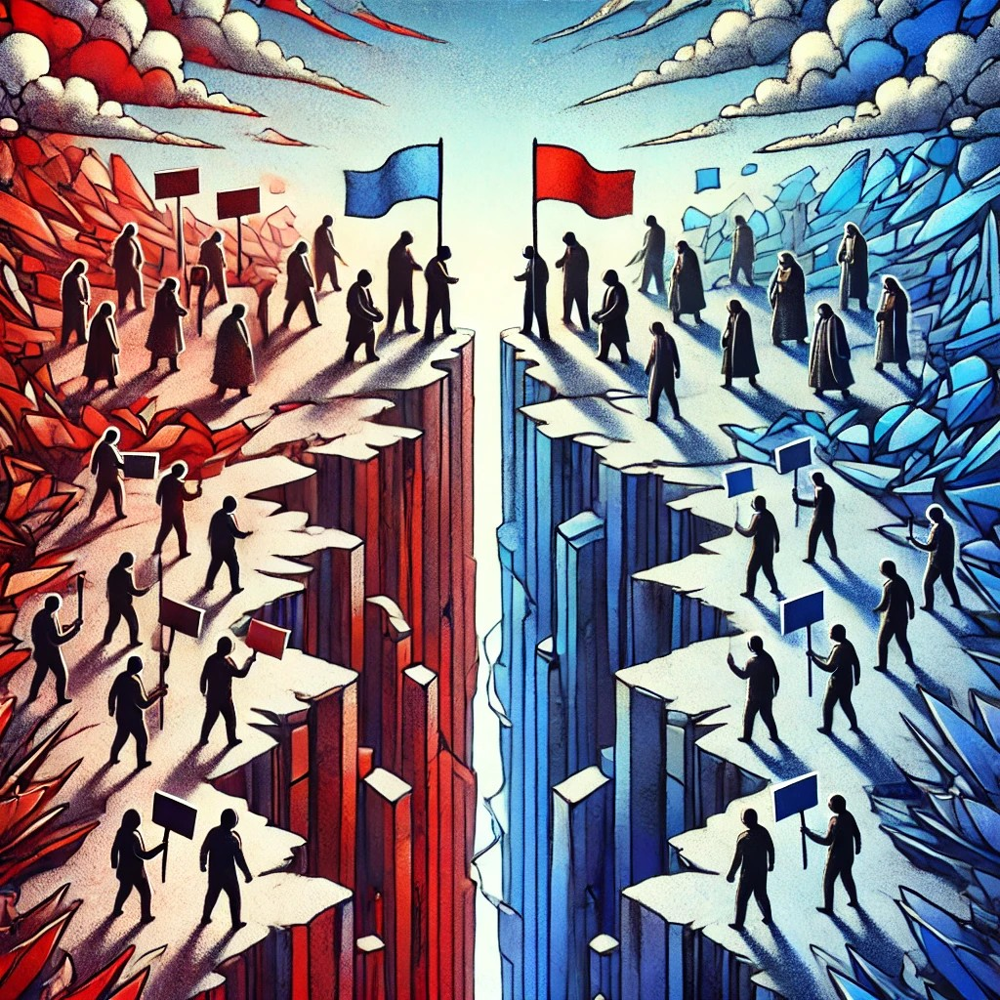
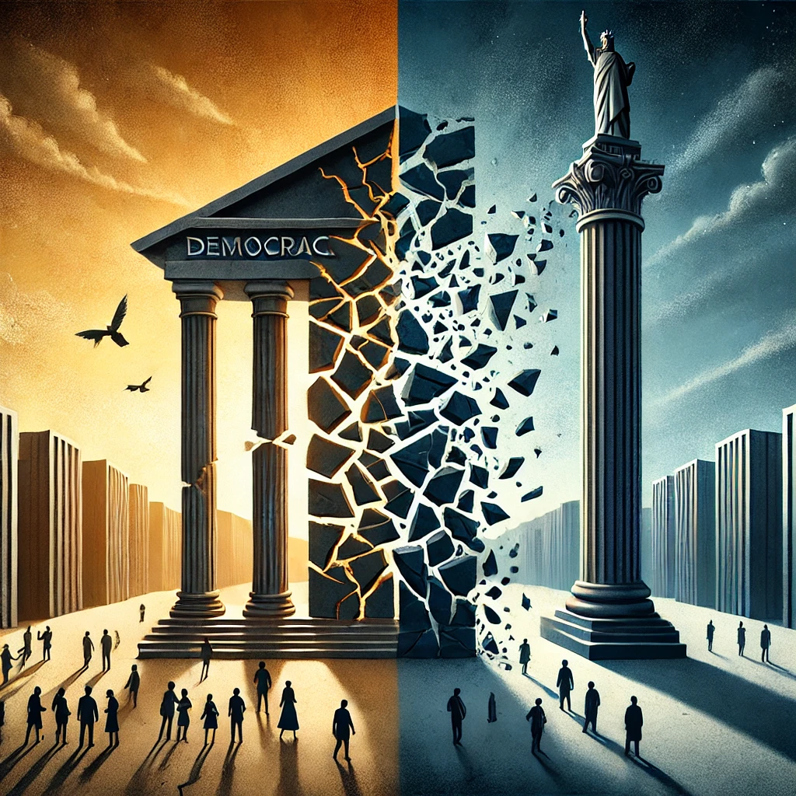

My most recent research is concentrated on two main topics. The first line of work investigates the institutional determinants of political polarization and its effects on various institutional outcomes, including democratic backsliding. The second line of work examines the trajectories of democratic breakdown and authoritarian consolidation, with a specific focus on Turkey, Hungary, and Venezuela.

I am preparing a special issue for Third World Quarterly as the guest editor. The issue focuses on the causes of political polarization in the Global South and its potential effects on democratic backsliding. While there is recent scholarly interest in pernicious polarization, much less is written about its determinants in a comparative context. The research to date focuses either on the United States or on liberal democracies in general. However, these studies tell us very little about the potential determinants of societal polarization in hybrid regimes, namely in electoral democracies and competitive autocracies. Our aim in this special issue is to fill this gap in the literature, with a specific focus on polarization at the mass level. We argue that it is crucial to study individual cases of highly divided countries from around the world to generate testable hypotheses on the causes of societal polarization. We identify and investigate nine cases of electoral democracies and competitive autocracies from different regions: Bangladesh, Brazil, Hungary, India, Poland, South Africa, Tunisia, Turkey and Venezuela.
Since the late 2000s under the rule of AKP and Erdogan, political polarization has increased at an unprecedented rate in Turkey. During the same period, the country has also seen a significant deterioration of its already troubled democracy. Earlier accounts seek the root of the political division in the sociocultural ‘center-periphery’ cleavage. This article posits that these historical and cultural legacy explanations downplay the crucial role of ac-tors and their strategic choices. By focusing on an elite-driven explanation, it argues that political polarization in Turkey is a deliberate authoritarian strategy of political survival. Polarization is used simultaneously as a consolidation mechanism for the leader’s support base and as a tool of repression against the opposition. The regime’s popular legitimacy derives from its electoral success, which can be sustained as long as public funds are available redistribution and clientelism. However, the ongoing economic crisis seriously threatens the deconsolidation of Erdogan’s base and opens up the possibility of thawing frozen cleavages.
A growing body of research shows that political polarization leads to political instability and democratic backsliding. This paper builds on the emerging literature and argues that polarization creates an additional hazard to regime survival by increasing coup likelihood. It creates a zero-sum game where the losing side is deprived of any meaningful means of political representation and power sharing. This divergence of political preferences divides the society into enemy camps, reduces the legitimacy of the incumbent, and raises the opposition’s incentives to attempt irregular power grabs. To test these claims, I employ a cross-national empirical analysis on panel data comprising of 176 countries from 1960 to 2019. The results confirm that political polarization increases the likelihood of both coup activity and success rate. Moreover, looking at the effects of polarization on coup likelihood across different regime types, democracies appear more vulnerable to pernicious polarization than autocracies.
Political polarization poses a significant threat to societies amidts the rising tide of authoritarianism. In extreme cases, it can be exploited by political parties seeking to solidify their power and it can deeply influence individuals’ worldviews, leading them to perceive the opposite camp as an existential threat, morally corrupt, and a danger to the nation. Our research employs sophisticated statistical network analysis techniques to examine the reflection of political polarization on eksisozluk.com, one of Turkey’s longest-running and most influential online forums. Our investigation is grounded in an extensive dataset comprising over three million entries dating back to 1999, along with a robust follower-following network of approximately 16,000 individual users. The central aim of this study is to quantify how different cleavages influence political polarization. By applying structural polarization and segregation measures, we identify and evaluate the most significant factors driving the formation of follower and following networks within this digital community. Our methodological approach centers on statistical network models, with particular emphasis on Exponential Random Graph Models (ERGMs). These powerful analytical tools enable us to isolate and measure the specific impact of various cleavages on network formation patterns. Building on this foundation, we utilize structural polarization metrics to uncover the fundamental cleavages that best explain the observed connection patterns among users. Through this comprehensive analysis, we aim to contribute valuable insights into how digital platforms shape and reflect sociopolitical divisions in contemporary Turkish society.
Political polarization has been recently sweeping the world, and many states fall prey regardless of their level of wealth, democratization, or topography. Moreover, polarization does not stop at politics and permeates people’s social identities, with politicians exploiting these vulnerable divides and driving the wedge between Us vs Them even further. Socio-political polarization has been shown to have many pernicious consequences, including democratic backsliding, decrease in financial welfare, healthcare chauvinism, worsening mental and physical health, increased level of political violence, discrimination, and overall hatred in the society. In this paper we attempt to assess the influence of socio-political polarization on the mental health of minorities, in particular, migrant minorities. We build upon the psychology literature and argue that the Us vs Them mindset would disproportionately affect mental health of immigrants, who are already viewed by many as outsiders due to their status, and polarization only intensifies these feelings, which leads to higher levels of discrimination, stress, and anxiety. We hypothesize that higher socio-political polarization is associated with worse mental health among migrant minorities. We measure mental health as a prevalent rate of depression – the least stigmatized among mental disorders. We test our predictions on cross-country time-series data from 1981 to 2014.
Turkish politics has been marked by two intrinsically related phenomena over the past decade: Autocratization and political polarization. The elections are also marked by declining democratic qualities and increased fraud. Therefore, election observation and volunteering became an issue of heated public debate. In this project, I argue that political polarization significantly influences the motives of election observation volunteers, as individuals from different parties often have distinct motivations shaped by their political affiliations. For instance, volunteers aligned with the ruling party may be motivated by a desire to protect their party's interests and ensure a favorable electoral outcome, viewing their role as a means to reinforce the current political landscape. Conversely, volunteers from opposition parties are likely driven by concerns over electoral integrity and the need to safeguard against potential voter suppression or fraud, reflecting a commitment to democratic principles and accountability. This divergence in motivations can lead to varying approaches in monitoring activities, as each group may prioritize different aspects of the electoral process based on their political beliefs and experiences within a highly polarized environment.

"The perfect storm: Aspiring autocrats and democratic breakdown in Turkey, Hungary and Venezuela” (book manuscript, in progress)
This monograph aims to explain the autocratization process in these three countries over the past two decades under polarizing leaders. I build on some of the hypotheses generated in our earlier article, “Elite survival strategies and authoritarian reversal in Turkey”, which won the Polity Prize for Best Article in 2018.
I argue that while structural conditions matter for democratic breakdown, political regimes change when critical actors push for change, consent to change, or when they are simply too weak to resist change. I develop an actor-based framework of democratic breakdown and authoritarian consolidation that rests on leader strategies and their interaction with the citizens and elites. I start from the idea that there are two ‘brake systems’ that can stop the process of backsliding in a democracy: citizens and opposition elites within institutions. When one of these brakes stops functioning, democratic backsliding can occur. However, this backsliding should be stoppable (and reversible) when the proper institutional mechanisms are in place and the elites are strong enough to control them. Democratic breakdown only occurs when both of these mechanisms simultaneously fail. The first brake is the citizens’ norms and expectations from the regime. Structural factors such as political culture and religion can be significant, but they are generally very static and slow changing. Political preferences, on the other hand, can change dramatically; especially following periods of major economic decline or state crisis. Populism and political polarization can erode democracy, causing backsliding through incumbent takeover. However, many scholars would argue that democratic institutions should act as the second emergency brake to stop backsliding and prevent total breakdown. Hence, the institutions and the opposition elites within them acting as veto players are the second set of roadblocks for the aspiring autocrat.
The process of autocratization happens through a combination of strategies targeted simultaneously towards the population, elites, and democratic institutions. The ruler has access to four key strategies: centralization, cooptation, legitimation, and repression. The leader’s access to the four strategies is not free of constraint. The optimal combination of survival strategies will differ from one regime to another, and within a single system over time. At each turn, the ability to use them will depend on factors such as the availability of material resources, the number of political cleavages within the society and their interest sets, and the strength of democratic institutions. Moreover, the strategies can have reinforcing or inhibiting effects vis-a-vis one another. The appeal of this causal framework is that it can be applied across multiple transition phases, and the mix of strategies will depend on the specifics of the regime.